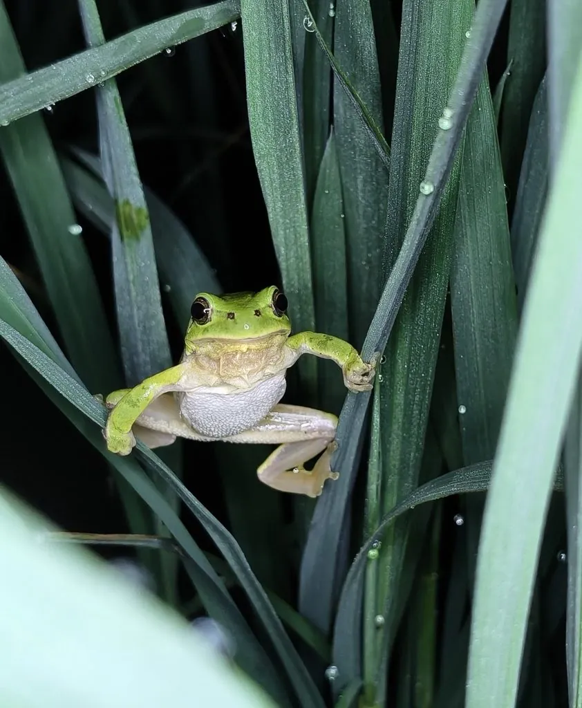

两栖动物 · 动物界
无斑雨蛙 Hyla immaculata

中国东部常见的小型雨蛙，背部纯绿无斑，趾端有吸盘，雨后常在草丛和树叶间鸣叫，以小型昆虫为食。
- 分类
- 门脊索动物门纲两栖纲目无尾目科雨蛙科属雨蛙属
- 栖息环境
- 稻田、池塘、溪流边的草丛、灌木和农田
- 地理分布
- 中国浙江、江苏、安徽、江西、湖北、湖南、福建等地
- 保护级别
- IUCN 无危（LC）；中国“三有”保护动物
物种志
无斑雨蛙体长仅 3–4 厘米，身体小巧，头部圆钝，皮肤光滑，背部呈鲜亮的翠绿色且没有斑点，腹面白色或淡黄色，体侧从吻端到胯部有一条深色细线，趾端膨大成吸盘，能攀附在草叶和树枝上。它的体色能随环境和光线在绿色与暗绿色之间变化，起到一定的隐蔽作用。
它分布于中国长江流域及东南部，栖息于稻田、池塘、溪流边的草丛、灌木和农作物上，夜间捕食小型昆虫，雨后常集体鸣叫，雄蛙的鸣声细而急促。每年 4–6 月繁殖，雌蛙产卵数百粒，卵附着在水草上，约 5–7 天孵化，蝌蚪在水中生活约 1–2 个月后变态。它体型小、捕食多种害虫，对农药和栖息地变化较敏感，被视为环境质量的指示物种，被列入中国“三有”保护动物名录。
形态与习性
- 食性蚊蝇、叶蝉、蚂蚁等小型昆虫
- 体长3–4 cm
- 体重约 3–6 g
- 寿命约 3–5 年
- 繁殖卵生，每次数百粒，约 5–7 天孵化
- 活动节律夜行性，雨后鸣叫活跃
- 特征背部纯绿无斑，趾端有吸盘
趣味知识
- 无斑雨蛙背部没有斑点，这是它区别于其他雨蛙的重要特征。
- 它的趾端吸盘让它可以停在草叶尖上，即使倒挂也不滑落。
- 雨后雄蛙会集体鸣叫，声音细密，常被误认为虫鸣。